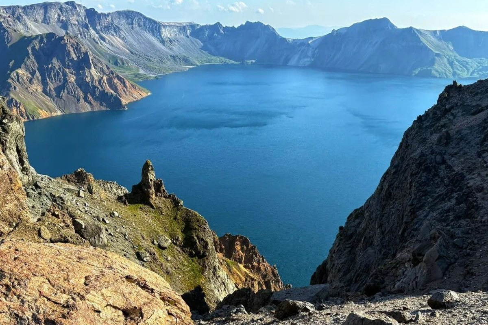

1

长白山天池
◈ 吉林延边州安图县与白山市抚松县交界
最佳
6月下旬—9月中旬；冬季仅适合有经验的冰雪旅行者
交通
飞长白山机场、长春龙嘉或延吉朝阳川机场；高铁至长白山站或敦化站转景区巴士
旺季门票105
观光车120
基础合计¥225
北景区旺季首道门票 105 元；山门内环保大巴 85 元＋上主峰倒站车 80 元，合计约 120 元进山交通
可选：天池主峰倒站车（天气允许时前往主峰观景台需另乘）
⚠ 天池开放取决于天气与道路，「到长白山」不等于「必见天池」；建议住二道白河镇
来源长白山官方收费公示